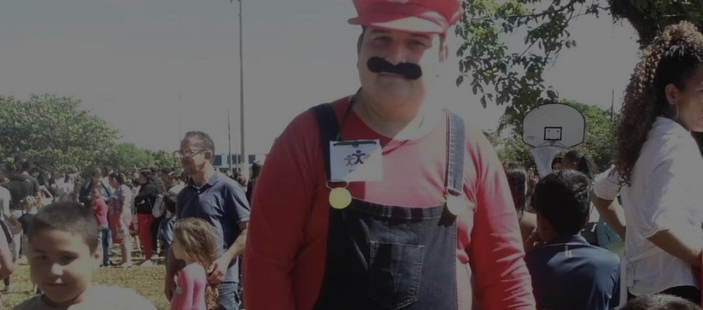
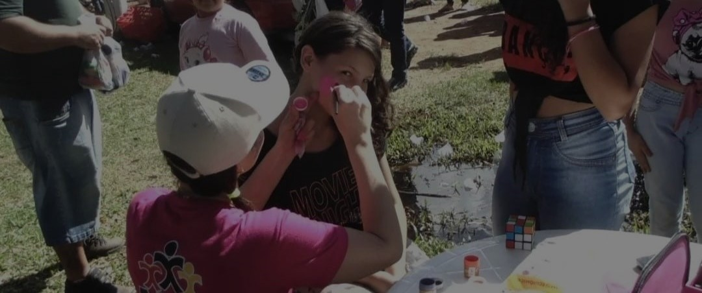

<html>
    <head>
        <meta charset="UTF-8">
        <meta name="viewport" content="width=device-width, initial-scale=1.0">
        <title>AICA Gravataí</title>
        <link rel="icon" href="img/WhatsApp_Image_2024-05-25_at_18.55.10-removebg.jpg">
        <link rel="stylesheet" href="style.css">
        <link rel="preconnect" href="https://fonts.googleapis.com">
        <link rel="preconnect" href="https://fonts.gstatic.com" crossorigin>
        <link href="https://fonts.googleapis.com/css2?family=Kanit:ital,wght@0,100;0,200;0,300;0,400;0,500;0,600;0,700;0,800;0,900;1,100;1,200;1,300;1,400;1,500;1,600;1,700;1,800;1,900&family=Montserrat:ital,wght@0,100..900;1,100..900&family=Shrikhand&display=swap" rel="stylesheet">
        <link rel="preconnect" href="https://fonts.googleapis.com">
        <link rel="preconnect" href="https://fonts.gstatic.com" crossorigin>
        <link href="https://fonts.googleapis.com/css2?family=Host+Grotesk:ital,wght@0,300..800;1,300..800&family=Kanit:ital,wght@0,100;0,200;0,300;0,400;0,500;0,600;0,700;0,800;0,900;1,100;1,200;1,300;1,400;1,500;1,600;1,700;1,800;1,900&family=Montserrat:ital,wght@0,100..900;1,100..900&family=Shrikhand&display=swap" rel="stylesheet">
    </head>
</html>
<body>
    <header>
        <div class="logo">
            
        </div>
        <nav>
            <ul>
                <li><a href="#inicio" class="host-grotesk">Início</a></li>
                <li><a href="#acoes" class="host-grotesk">Ações</a></li>
                <li><a href="#historia" class="host-grotesk">História</a></li>
                <li><a href="#sobre" class="host-grotesk">Sobre</a></li>
                <li><a href="#ajudar" class="button shrikhand-regular">Ajudar</a></li>
            </ul>
        </nav>
    </header>
    <section class="carousel" id="inicio">
        <div class="slider-frame">
          <div class="slide-images">
            <div class="img-container">
                
                <h4 class="host-grotesk">1 de 4</h4>
                <h2 class="shrikhand-regular">Fotos</h2>
                <p class="shrikhand-regular">Páscoa 2024</p>
            </div>
            
            <div class="img-container">
                
                <h4 class="host-grotesk">2 de 4</h4>
                <h2 class="shrikhand-regular">Fotos</h2>
                <p class="shrikhand-regular">Evento à fantasia 2024</p>
            </div>
            
            <div class="img-container">
                
                <h4 class="host-grotesk">3 de 4</h4>
                <h2 class="shrikhand-regular">Fotos</h2>
                <p class="shrikhand-regular">Doações e atividades com as crianças</p>
            </div>

            <div class="img-container">
                
                <h4 class="host-grotesk">4 de 4</h4>
                <h2 class="shrikhand-regular">Fotos</h2>
                <p class="shrikhand-regular">Pinturas com as crianças</p>
            </div>
        
          </div>
        </div>
      </section>

    <section id="acoes">
        <div id="titulo">
        <h1 class="cinza shrikhand-regular">Ações</h1>
        <h2 class="shrikhand-regular">Aprenda como trabalhamos</h2>
        </div>
        <div class="cards">
            <div class="card">
                
                <h3 class="host-grotesk">Acolhimento de pessoas necessitadas</h3>
            </div>
            <div class="card">
                
                <h3 class="host-grotesk">Fornecimento de itens de necessidade básica</h3>
            </div>
            <div class="card">
                
                <h3 class="host-grotesk">Realização de Eventos</h3>
            </div>
        </div>
        <div id="link" class="card">
            <p class="host-grotesk">Veja Melhor como trabalhamos</p>
        </div>
    </section>
    <section id="missao">
        <h1 class="cinza shrikhand-regular">História</h1>
        <h2 class="shrikhand-regular">Um pouco da nossa missão</h2>
        <div class="missao-container">
            <div class="missao-item">
                <h3 class="shrikhand-regular">Social</h3>
                <div id="missao-social">
                    <p class="host-grotesk justificado">A ONG acolhe mães com filhos pequenos, idosos e pessoas impossibilitadas de trabalhar, especialmente aqueles abandonados e em situação de vulnerabilidade. Oferece suporte com empréstimo de camas hospitalares, cadeiras de rodas, muletas, medicamentos, fraldas e outros itens essenciais para atender às necessidades básicas dessas pessoas.</p>
                </div>
            </div>
    
            <div class="missao-item">
                <h3 class="shrikhand-regular">Financeira</h3>
                <div id="missao-financeira">
                    <p class="host-grotesk justificado">Outra maneira de auxiliarmos é com o fornecimento de alimentos, materiais de higiene e produtos de limpeza para famílias que trabalham com reciclagem (catadores), pois temos conhecimento de que estão tentando, através do trabalho, buscar o sustento da família. No entanto, o valor arrecadado é insuficiente para suprir todas as suas necessidades.</p>
                </div>
            </div>
        </div>
    </section>
    <section id="sobre">
        <div id="qmsomos">
        <h1 class="cinza shrikhand-regular">Sobre</h1>
        <h2 class="shrikhand-regular">Quem somos?</h2>
        </div>
        <div class="sobre-container">
            <div class="sobre-item">
                <h3 class="host-grotesk">O que é AICA Gravataí?</h3>
                <p class="host-grotesk justificado">É a Associação Irmãos do Caminho, uma ONG cituada na rua Bernardo Joaquim Ferreira, 155 - bairro Parque dos Anjos no município de Gravataí/RS, fundada em 12/07/2019.</p>
            </div>
            <div class="sobre-item">
                <h3 class="host-grotesk">Quem são os membros da AICA?</h3>
                <p class="host-grotesk justificado">Pessoas comuns da sociedade, que realizam trabalhos voluntários na sede da ONG e ações externas com o objetivo de auxiliar pessoas em necessidades diversificadas.</p>
            </div>
        </div>
    </section>
    <footer>
        <div class="footer-content">
            <div class="footer-section">
                <h3 class="host-grotesk">Precisa de ajuda ou quer ajudar?</h3>
                <p class="host-grotesk">Dúvidas frequentes</p>
                <p class="host-grotesk">Doação de Alimentos</p>
                <p class="host-grotesk">Voluntariado</p>
            </div>
            <div class="footer-section">
                <h3 class="shrikhand-regular">Redes Sociais</h3>
                <p class="host-grotesk">@aica_gravatai</p>
            </div>
            <div class="footer-section">
                <h3 class="shrikhand-regular">Contatos</h3>
                <p class="host-grotesk">(51) 9811-0178 - presidente</p>
                <p class="host-grotesk">(51) 9841-0653 - secretaria</p>
                <p class="host-grotesk">(51) 9915-7576 - ONG</p>
            </div>
        </div>
    </footer>
    <script src="script.js"></script>
</body>
<html>
 
